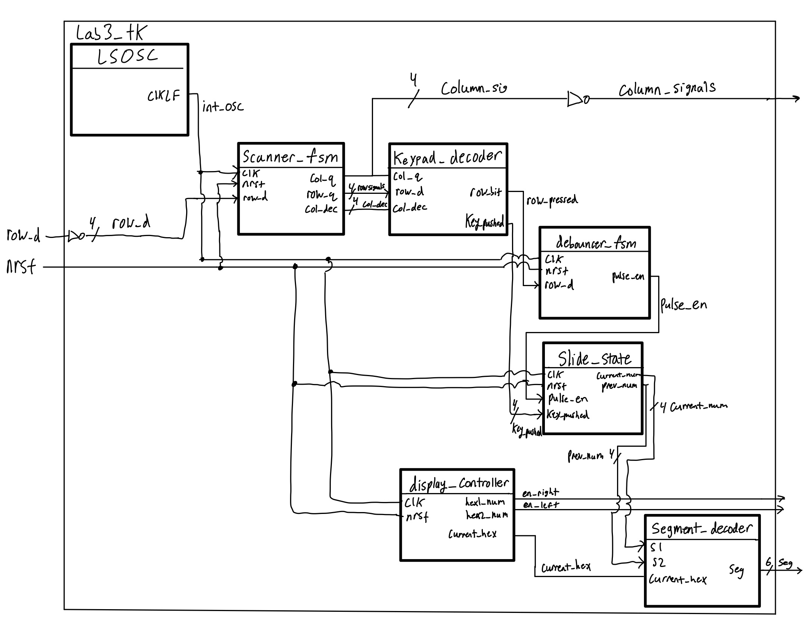

Summary
The third digital design installation in microPs involved scanning a keypad and presenting the most recently pressed key on the right side of a dual 7-segment display with the number on the left displaying the previous key pressed. The purpose for this lab was to expose students to a complex digital system with many seqeuntial and combinational elements. Additionally, the lab forced students to use oscilloscopes to fix the many timing problems that they would encounter during the debugging phase. To complete this lab, I created a design that would scan through the keypad’s columns allowing the rows to input voltages to the FPGA to be properly detected and decoded. Although this sounds simple, it was not.
Design
Essentially, the scanner FSM will detect a key press and send output signals to the keypad’s columns and to the keypad decoder to preserve the current key press. While the key is still pressed, a keypad decoder decodes the key that was pushed. To verify the key push, a debouncer FSM debounces the row input signal to avoid double counting due to the switch bouncing phenomena. After the key pushed is verified to be an actual key push, the previous number gets the current number and the current number pressed is updated to the key that was pushed. These two two numbers are then sent to the time multiplexing system that displays the current number pressed on the right of the display and the previous number on the left. The block diagram for this is shown below.

I created this design by first deciding that my keypad would be oriented in a pull-up resistor fashion where the row inputs would be pulled to Vcc at all times until an event occurs. I then created the scanner FSM that would rotate a LOW voltage on one column at a time while the rest were driven HIGH. Thus if a key was pressed, the current column that was set LOW would send this LOW voltage across the SPDT switch that was pushed down enabling a LOW voltage to be read on that associated row. This grounding effect overpowers the weak internal pull-up resistor on the rows allowing a valid logic level voltage to be read. The electrical schematic for the system is shown below.

It is important to mention that the scanner FSM toggles the LOW and HIGH column voltage. When a key is pressed, all columns are driven LOW to avoid potential contention scenarios. On the otherhand when no key push is detected, all columns are toggled HIGH except for one to scan the keypad. In addition to this, the FSM sends an encoded column signal to a combinational keypad decoder module to properly decode the key press. Below is the state transition diagram for the scanner FSM.

This encoded column signal is bit swizzled along with the row input to check for specifc combination cases for keys. If a condition is verified, the key pushed is assigned the proper number along with a flag signal, row_bit, that is sent to the debouncer. If a key is pressed and held down, the key flag is still driven HIGH to keep the keypad from bumping the current number to the previous number.
The debouncer FSM takes in the row input signal that was pressed down on. This module recieves the key flag and steps into the first state to begin the counting phase. When enough clock cycles have passed, an enable signal is driven HIGH and sent to the next module that updates the current number and previous number. To prevent accidental double counting, the pulsed enable signal is driven HIGH for only one clock cycle. The state transition diagram for this FSM can be seen below along with a signal diagram.
The design updates the current and previous number through simple sequential logic. Before the current number is updated to the key pushed, the previous number gets the current number. This situation is only every carried out when the pulsed enable signal is HIGH.
Finally, the updated current number and previous number is sent to the time multiplexing system built from lab 2. The numbers are shown on the 7-segment display on their respective sides. These numbers are illuminated every 60 clock cycles where they alternate on every set of 60 meaning that while one side is displayed, the other is turned off. This is due to the nature of the time multiplexing system where only one 7-segment decoder is used.
Although syncrhonizers have not been implemented yet, they will be put in shortly in the coming week to further mitigate metastability in the system.
Overall, the design meets the proficiency requirements. In the coming week, I will update the system to meet the excellence requirement. A shocking ~50 hours were spent on this lab. The first half of this involved not realizing that my original pull-down design for the keypad did not meet the logic level requirements for the FPGA. LOW signals would be interpreted as LOW signals, however, HIGH signals would never make it past the VIL logic level of 0.8 volts. This permanently froze the system at “00” on the display making it quite a difficult and frustrating problem to debug because the simulations showed that there should be number changes. My next short coming that led to the ridiculous amount of hours spent on the lab was confusing the active LOW logic with active HIGH at times. This led to me outputting incorrect values to the keypad’s columns creating once again a frozen system on the display. Hours of probing eventually made me realize my mistake. The last major bug that contributed to the ~50 hour effort was the keypad bumping scenario mentioned near the beginning of the design section. When a key was pressed and if the user pressed another key in a different row and in any of the columns then released the most recent key pushed, the previous number would updated to the current number. The problem here was that the key flag was being reset to zero when a key release was detected thus resetting the debouncer counter. As a result, unwanted pulsed enable signals were updating the current and previous numbers to the key that was still pressed. Putting a conditional statement within the default of a case statement fixed this issue.
Verification
To verify my design, I created testbenches and manually checked the waveforms for correctness.
The scanner FSM received clock, reset, and row input signals. Based off of the current column signal output to the keypad, the FSM will either continue to scan or enter the pressed/released states.
The keypad decoder module receives the following 4 bit signals: column signal ouput to the keypad, an encoded column signal to be decoded, and a row signal. If one of the eight combinations are reached, the keypad decoder will update the key pushed value and send a row bit output as a HIGH logic value. If a combination goes to the default case, a conditional statement is reached and will check the column signals outputted to the keypad. If the logic sees that a key is still being pressed, the row bit signal will continue to be asserted HIGH and LOW otherwise. 
The debouncer FSM recieves a clock, reset, and row bit input. When the system detects a HIGH value for the row bit, a counter starts. If the counter reaches the desired threshold, the pulse enabled signal will be driven HIGH for one clock cyle and LOW otherwise. If the row bit continues to be HIGH after this, the counter will not start back up and a LOW output will be driven through the pulse enabled wire. 
The slide state module receives a clock, reset, pulsed enabled input, and the 4 bit key pushed signals. On the rising edge of the clock, a conditional statement check if the pulsed enabled input is set HIGH. If so, the previous number will be updated to the current number. Then, the current number will get the key pushed value.

This is the system simulation. In yellow is the current state for the scanner FSM. In purple is the key that was pushed. In cyan are the current number and previous number values. My design works for all inputs into the system. All requirements were met for proficiency.